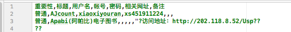

☰ 目录
读写csv文件
举一个csv文件的例子：

那么就得开始解析csv文件了：
需要注意的是，每行是一个字典， 为了防止每行字典的顺序被打乱， 用有序字典：
order_dict = collections.OrderedDict() # 有序字典， 保持标签的顺序
一张表的结构就是： [{},{},....] , 每个字典就是一行。
还有一点要注意的是， 在写文件的时候，为了防止乱码， 需要在文件句柄加入下语句：
csvFile.write(codecs.BOM_UTF8) # 防止乱码
示例
#!/usr/bin/env python
# -*- coding: utf-8 -*-
'''
filename: csv_wr.py
message: 读写csv文件的
'''
__author__ = 'xi'
import csv
import collections
import codecs
class RWCsv():
def __init__(self, in_file='', out_file='', headers=[], list = []):
self._header = headers
self._list = list
self._in_infile = in_file
self._out_file = out_file
self._dict_reader = None
def getList(self):
return self._list
def str2unicode(self, val):
return val.decode('utf-8')
def unicode2str(self, val):
return val.encode('utf-8')
def read(self, filename='', mode='r'):
l_filename = filename # l 开头的都是临时文件名
if not l_filename:
l_filename = self._in_infile
csvFile = open(l_filename, mode)
self._dict_reader = csv.DictReader(csvFile)
self._header = self._dict_reader.fieldnames #['重要性', '标题', '用户名', '账号', '密码', '相关地址', '备注']
# print type(self.dict_reader.fieldnames[0])
# print self._header # 输出第一行
self.dict_reader2general_dict()
def dict_reader2general_dict(self):
'''
将dict_reader 转成普通的 dict 对象
:return:
'''
self._list = []
for item in self._dict_reader:
# print item
order_dict = collections.OrderedDict() # 有序字典， 保持标签的顺序
for key in self._header:
order_dict[key] = item[key]
self._list.append(order_dict)
def write(self, filename='', header = [], list = [], mode='w'):
l_filename = filename # l 开头的都是临时文件名
if not l_filename:
l_filename = self._out_file
l_header = header
if not l_header:
l_header = self._header
l_list = list
if not l_list:
l_list = self._list
# 写csv 文件，Excel打开会乱码，参考：https://www.zhihu.com/question/34201726
csvFile = open(l_filename, mode)
csvFile.write(codecs.BOM_UTF8) # 防止乱码
# 文件头以列表的形式传入函数，列表的每个元素表示每一列的标识
fileheader = l_header
dict_writer = csv.DictWriter(csvFile, fileheader)
# 但是如果此时直接写入内容，会导致没有数据名，所以，应先写数据名（也就是我们上面定义的文件头）。
# 写数据名，可以自己写如下代码完成：
dict_writer.writerow(dict(zip(fileheader, fileheader)))
# dict_writer.writeheader()
# 编码转换
# ll_list = []
# for item in l_list:
# order_dict = collections.OrderedDict() # 有序字典， 保持标签的顺序
# for k, v in item.items():
# l_k = self.str2unicode(k)
# l_v = self.str2unicode(v)
# order_dict[l_k] = l_v
# ll_list.append(order_dict)
# 之后，按照（属性：数据）的形式，将字典写入CSV文档即可
for item in l_list:
dict_writer.writerow(item) # 每一行写一个字典
csvFile.close()
def str2unicode(self, val):
return val.decode('utf-8')
def unicode2str(self, val):
return val.encode('utf-8')
def code_transfer(self, val):
if isinstance(val, unicode):
return self.unicode2str(val)
else:
return val
if __name__=='__main__':
obj = RWCsv('src_csv/东大.csv', 'ttt.csv');
obj.read()
obj.write()
参考
[1] https://blog.csdn.net/waple_0820/article/details/70049953
[2] https://python3-cookbook.readthedocs.io/zh_CN/latest/c06/p01_read_write_csv_data.html
[3] https://blog.csdn.net/guoziqing506/article/details/52014506